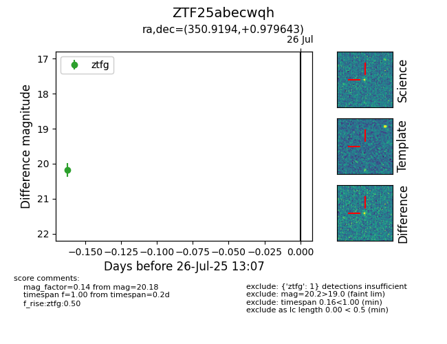

Target ZTF25abecwqh at 2025-07-26 13:07, see:
FINK: fink-portal.org/ZTF25abecwqh
Lasair: lasair-ztf.lsst.ac.uk/objects/ZTF25abecwqh
ALeRCE: alerce.online/object/ZTF25abecwqh
alt names
ZTF25abecwqh (ztf,fink)
coordinates:
equatorial (ra, dec) = (350.9194,+0.97964)
galactic (l, b) = (82.4775,-54.84668)
photometry
last ztfg=20.18
1 ztfg detections
